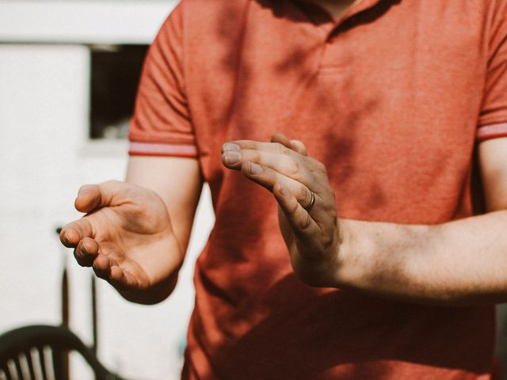

UNIT 10 · VOCABULARY
C 開頭（三）
C-III
38 個單字聽・唸・用
本單元單字一覽
WORD UP「C-III」的 38 個字（Chinese 到 collect）。紅色＝要複習，藍色標籤＝WORD UP 標熟記、還要在這裡考對。
ChinesechocolatechoicechoosechopstickChristmaschubbychurchcirclecitizencityclaimclapclassclassicclassicalclassmatecleanclearclerkcleverclimateclimbclockcloseclosetclothescloudyclubcoachcoastcoatcockroachcoffeecoinCokecoldcollect
每個字都有 🔊，先聽發音、跟著唸，再看例句。
單字 1–4

Chinese
中國的；中文；華人adj./n.
Chinese is not easy to learn.
中文不容易學。
中文不容易學。

chocolate
巧克力n.
I love hot chocolate in winter.
我冬天很愛喝熱可可。
我冬天很愛喝熱可可。
🔀
choice
選擇n.
You have to make a choice.
你必須做個選擇。
你必須做個選擇。
👆
choose
選擇v.
Choose one color you like.
選一個你喜歡的顏色。
選一個你喜歡的顏色。
單字 5–8
chopstick
筷子n.
Can you use chopsticks?
你會用筷子嗎？
你會用筷子嗎？
Christmas
聖誕節n.
Merry Christmas!
聖誕快樂！
聖誕快樂！
chubby
胖嘟嘟的adj.
The baby has chubby cheeks.
寶寶的臉頰胖嘟嘟的。
寶寶的臉頰胖嘟嘟的。

church
教堂n.
They go to church on Sundays.
他們星期天去教堂。
他們星期天去教堂。
單字 9–12

circle
圓圈；圈起來n./v.
Circle the right answer.
把正確答案圈起來。
把正確答案圈起來。
🧑🤝🧑
citizen
公民；市民n.
Good citizens obey the law.
好公民會守法。
好公民會守法。

city
城市n.
Taipei is a busy city.
台北是個繁忙的城市。
台北是個繁忙的城市。
🗣️
claim
聲稱；索取v./n.
He claimed that he saw a ghost.
他聲稱他看到鬼。
他聲稱他看到鬼。
單字 13–16

clap
拍手v.
Everyone clapped for the singer.
大家為歌手鼓掌。
大家為歌手鼓掌。
class
班級；課n.
We have six classes today.
我們今天有六堂課。
我們今天有六堂課。
🎞️
classic
經典的；經典作品adj./n.
This movie is a classic.
這部電影是經典。
這部電影是經典。
classical
古典的adj.
Mom likes classical music.
媽媽喜歡古典音樂。
媽媽喜歡古典音樂。
單字 17–20

classmate
同學n.
Amy is my classmate.
Amy 是我的同學。
Amy 是我的同學。

clean
乾淨的；打掃adj./v.
Please clean your room.
請打掃你的房間。
請打掃你的房間。

clear
清楚的；晴朗的；清除adj./v.
The sky is clear today.
今天天空很晴朗。
今天天空很晴朗。

clerk
店員；職員n.
The clerk helped me find the book.
店員幫我找到那本書。
店員幫我找到那本書。
單字 21–24

clever
聰明的adj.
What a clever idea!
好聰明的主意！
好聰明的主意！

climate
氣候n.
Taiwan has a warm climate.
台灣氣候溫暖。
台灣氣候溫暖。
climb
爬v.
We climbed Yangmingshan last weekend.
我們上週末去爬陽明山。
我們上週末去爬陽明山。

clock
時鐘n.
The clock on the wall is slow.
牆上的時鐘慢了。
牆上的時鐘慢了。
單字 25–28

close
關閉；接近的；親近的v./adj.
Please close the door.
請關門。
請關門。
closet
衣櫥n.
Hang your coat in the closet.
把外套掛進衣櫥。
把外套掛進衣櫥。

clothes
衣服n.
I need some new clothes.
我需要一些新衣服。
我需要一些新衣服。
cloudy
多雲的；陰天的adj.
It is cloudy today.
今天是陰天。
今天是陰天。
單字 29–32

club
社團；俱樂部n.
I joined the music club.
我參加了音樂社。
我參加了音樂社。

coach
教練n.
Our coach is strict but kind.
我們的教練嚴格但很好。
我們的教練嚴格但很好。
coast
海岸n.
We drove along the east coast.
我們沿著東海岸開車。
我們沿著東海岸開車。
coat
外套；大衣n.
Put on your coat. It's cold.
穿上外套，天氣很冷。
穿上外套，天氣很冷。
單字 33–36

cockroach
蟑螂n.
My sister screamed when she saw a cockroach.
我妹妹看到蟑螂時尖叫了。
我妹妹看到蟑螂時尖叫了。

coffee
咖啡n.
Dad drinks a cup of coffee every morning.
爸爸每天早上喝一杯咖啡。
爸爸每天早上喝一杯咖啡。

coin
硬幣n.
I put a coin into the machine.
我把一枚硬幣投進機器。
我把一枚硬幣投進機器。
Coke
可樂n.
Can I have a Coke, please?
可以給我一杯可樂嗎？
可以給我一杯可樂嗎？
單字 37–38

cold
冷的；感冒adj./n.
I caught a cold yesterday.
我昨天感冒了。
我昨天感冒了。

collect
收集v.
My brother collects stamps.
我哥哥收集郵票。
我哥哥收集郵票。
容易搞混的字
| 字 | 用法 | 例子 |
|---|---|---|
| choose / choice | 選擇（動詞）／ 選擇（名詞） | choose a book ／ make a choice |
| classic / classical | 經典的 ／ 古典的（音樂、文學） | a classic movie ／ classical music |
| climate / weather | 氣候（長期）／ 天氣（今天） | a warm climate ／ nice weather |
| clothes / cloth | 衣服（複數）／ 布 | new clothes ／ a piece of cloth |
| clock / watch | 時鐘 ／ 手錶 | a wall clock ／ a watch on my wrist |
| coat / coast | 外套 ／ 海岸 | wear a coat ／ on the coast |
close 當動詞（關）唸 /kloʊz/，當形容詞（近的）唸 /kloʊs/：a close friend。
常考片語
| 說法 | 中文 | 例子 |
|---|---|---|
| make a choice | 做選擇 | It's hard to make a choice. |
| catch a cold | 感冒 | Wear a coat, or you'll catch a cold. |
| clean up | 打掃乾淨 | clean up the classroom |
| join a club | 參加社團 | join the basketball club |
| a pair of chopsticks | 一雙筷子 | two pairs of chopsticks |
| be close to | 靠近、親近 | My home is close to the school. |
快問快答：中文 → 英文
1中國的；中文；華人Chinese
2選擇choice
3筷子chopstick
4胖嘟嘟的chubby
5圓圈；圈起來circle
6城市city
7拍手clap
8經典的；經典作品classic
快問快答：英文 → 中文
1classmate同學
2clear清楚的；晴朗的；清除
3clever聰明的
4climb爬
5close關閉；接近的；親近的
6clothes衣服
7club社團；俱樂部
8coast海岸
學完了！接下來
複習方法
review
- 回到「📗 單字卡」，按「遮中文」自己考自己
- 再按「遮英文」，看中文說出英文
- 每個例句跟著 🔊 唸一次
準備好了
- 按右上角「📝 前往測驗」
- 測驗錯的題目要訂正到全對
- 訂正完成補送 1 點